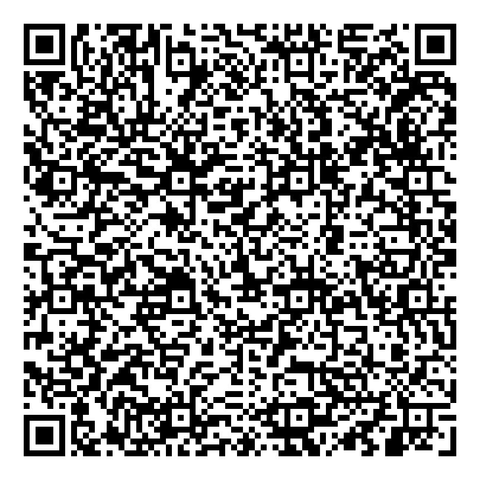
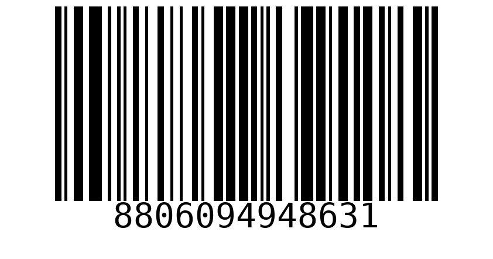
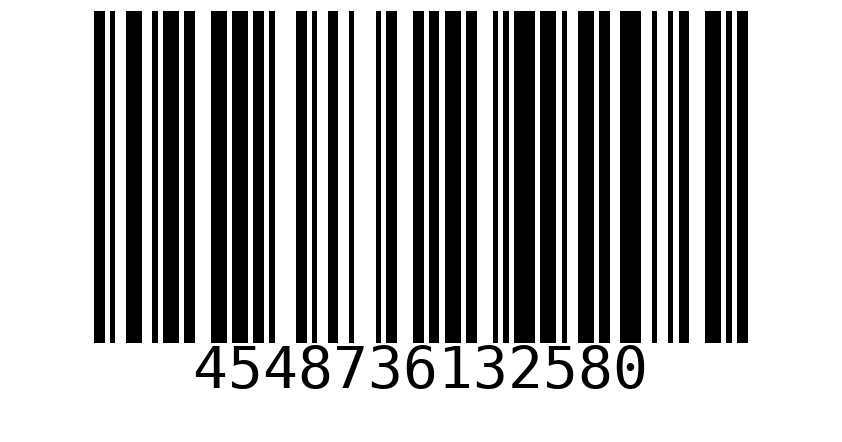
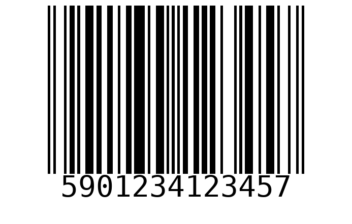

Scanner test codes
Test Smart TV — embedded product details
Scan to fill product details, then review and save. Category: Electronics (must exist in the app).
QR contents
{
"name": "Test Smart TV",
"brand": "Acme",
"modelNumber": "product-tv-qr",
"serialNumber": "SN-product-tv-qr",
"barcode": "WK-product-tv-qr",
"categoryName": "Electronics",
"purchaseDate": "2026-10-01",
"purchasePrice": 45000,
"warrantyPeriod": 2,
"warrantyPeriodUnit": "YEARS",
"storeSeller": "Test Store",
"notes": "Imported from product QR code"
}Test Laptop — embedded product details

Scan to fill product details, then review and save. Category: Computers (must exist in the app).
QR contents
{
"name": "Test Laptop",
"brand": "Acme",
"modelNumber": "product-laptop-qr",
"serialNumber": "SN-product-laptop-qr",
"barcode": "WK-product-laptop-qr",
"categoryName": "Computers",
"purchaseDate": "2026-10-01",
"purchasePrice": 52999,
"warrantyPeriod": 2,
"warrantyPeriodUnit": "YEARS",
"storeSeller": "Test Store",
"notes": "Imported from product QR code"
}Test Headphones — embedded product details
Scan to fill product details, then review and save. Category: Electronics (must exist in the app).
QR contents
{
"name": "Test Headphones",
"brand": "Acme",
"modelNumber": "product-headphones-qr",
"serialNumber": "SN-product-headphones-qr",
"barcode": "WK-product-headphones-qr",
"categoryName": "Electronics",
"purchaseDate": "2026-10-01",
"purchasePrice": 9999,
"warrantyPeriod": 2,
"warrantyPeriodUnit": "YEARS",
"storeSeller": "Test Store",
"notes": "Imported from product QR code"
}Open this sheet on another screen or print it, then scan using Add product → Scan. QR contents are plain barcode values. Product details are filled only when a matching saved product or external lookup result exists.
samsung-code128 · Code 128

8806094948631
Matches the Samsung TV in seed_mock_data.py when seeded.
sony-code128 · Code 128

4548736132580
Matches the Sony headphones in seed_mock_data.py when seeded.
test-code128 · Code 128
WK-TEST-001
Synthetic test value; save a product with this barcode to test local lookup.
test-ean13 · EAN-13

5901234123457
Valid EAN-13 checksum; external lookup results may vary.
samsung-qr · QR
8806094948631
Same seeded Samsung TV value, encoded as QR.
test-qr · QR
WK-TEST-001
Same synthetic test value, encoded as QR.